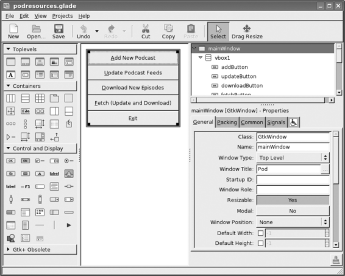

{% include JB/setup %}
{% raw %}
<div>

    <a name="toppage" class="calibre5" id="toppage"></a>
    <table width="100%" border="0" cellspacing="0" cellpadding="0" class="sfbody">
      <tr valign="top" class="calibre6">
        <td class="calibre7">
          <a name="MainContent" class="calibre5" id="MainContent"></a>
          <table width="95%" class="sfbody">
            <tr class="calibre6">
              <td class="v">
                <!--Copyright (c) 2002 Safari Tech Books Online-->
                <table width="100%" border="0" cellspacing="0" cellpadding="2" class="sfbody">
                  <tr class="calibre6">
                    <td valign="middle" class="v1" height="5">
                      
                    </td>
                  </tr>
                  <tr class="calibre6">
                    <td valign="middle" class="v1">
                      <table cellpadding="0" cellspacing="0" border="0" width="100%" class="sfbody">
                        <tr class="calibre6">
                          <td class="v"><span class="calibre9"> </span>
                   
                  <span class="calibre9">   </span>
             <span class="calibre9"> </span></td>
                        </tr>
                      </table>
                    </td>
                    <td class="v1"/>
                    <td valign="middle" class="v2"><a href="21061538.html" class="calibre13"></a> 
           
          <span class="calibre9"><a target="_self" href="gui_overview.html" title="Previous section" class="calibre13"></a></span>
				
				 
				
				<span class="calibre9"><a target="_self" href="gui_event.html" title="Next section" class="calibre13"></a></span></td>
                  </tr>
                </table>
                <div id="section" class="calibre15">
                  <table width="100%" border="0" cellspacing="0" cellpadding="0" class="sfbody1">
                    <tr class="calibre16">
                      <td valign="top" class="v3">Safari IT Books Language Constructs Functional Programming Haskell Safari IT Books Programming Programming Programming Bryan O'Sullivan  Donald Bruce Stewart  John Goerzen  O'Reilly Media, Inc. Real World Haskell, 1st Edition<a name="gui_glade" class="calibre27" id="gui_glade"></a><h3 id="title-IDAXJOUH" class="docSection1Title">23.3. User Interface Design with Glade</h3><a name="x_Hw" class="calibre27" id="x_Hw"></a><p class="docText">In this chapter, we are going to develop a GUI for the
    podcast downloader we first developed in <a class="docLink" href="webclient_split_000.html#webclient">Chapter 22</a>. Our
    first task is to design the user interface in Glade. Once we have
    accomplished that, we will write the Haskell code to integrate it with the
    application.</p><a name="x_Iw" class="calibre27" id="x_Iw"></a><p class="docText">Because this is a Haskell book, rather than a GUI design
    book, we will move fast through some of these early parts. For more
    information on interface design with Glade, you may wish to refer to one
    of these resources:</p><dl class="docList1"><dt class="calibre48"><br class="calibre48"/><p class="calibre37"><i class="docEmphasis"><span class="docPubcolor">The Glade homepage</span></i></p></dt><dd class="calibre49"><p class="docText">Contains documentation for Glade; see .</p></dd><dt class="calibre48"><br class="calibre48"/><p class="calibre37"><i class="docEmphasis"><span class="docPubcolor">The GTK+ homepage</span></i></p></dt><dd class="calibre49"><p class="docText">Contains information about the different widgets. Refer to the
          documentation section, and then the stable GTK documentation area;
          see .</p></dd><dt class="calibre48"><br class="calibre48"/><p class="calibre37"><i class="docEmphasis"><span class="docPubcolor">The gtk2hs homepage</span></i></p></dt><dd class="calibre49"><p class="docText">Also has a useful documentation section, which contains an API
          reference to gtk2hs as well as a glade tutorial; see .</p></dd></dl><a name="gui_glade_concepts" class="calibre27" id="gui_glade_concepts"></a><h4 id="title-IDAALOUH" class="docSection1Title">23.3.1. Glade Concepts</h4><a name="x_Mw" class="calibre27" id="x_Mw"></a><p class="docText">Glade<a name="I_indexterm23_d1e45754" class="calibre27" id="I_indexterm23_d1e45754"></a> is a user-interface design tool. It lets us use a
      graphical interface to design our graphical interface. We could build up
      the window components using a bunch of calls to GTK+ functions, but it
      is usually easier to do this with Glade.</p><a name="x_Nw" class="calibre27" id="x_Nw"></a><p class="docText">The fundamental "thing" we work with in GTK+ is the
      <span class="docEmphasis">widget</span>. A <a name="I_indexterm23_d1e45765" class="calibre27" id="I_indexterm23_d1e45765"></a>widget represents any part of the GUI, and may contain
      other widgets. Some examples of widgets include a window, dialog box,
      button, and text within the button.</p><a name="x_Ow" class="calibre27" id="x_Ow"></a><p class="docText">Glade, then, is a widget layout tool. We set up a whole
      tree of widgets, with top-level windows at the top of the tree. You can
      think of Glade and widgets in somewhat the same terms as HTML: you can
      arrange widgets in a table-like layout, set up padding rules, and
      structure the entire description in a hierarchical way.</p><a name="x_iJ1" class="calibre27" id="x_iJ1"></a><p class="docText">Glade saves the widget descriptions into an XML
      file.<a name="I_indexterm23_d1e45773" class="calibre27" id="I_indexterm23_d1e45773"></a> Our program loads this XML file at runtime. We load the
      widgets by asking the Glade runtime library to load a widget with a
      specific name.</p><a name="x_Pw" class="calibre27" id="x_Pw"></a><p class="docText"><a class="docLink" href="#screenshot_glade">Figure 23-1</a> shows a screenshot
      of an example working with Glade to design our application's main
      screen.</p><a name="screenshot_glade" class="calibre27" id="screenshot_glade"></a><p class="calibre37"><div class="calibre61"><h5 class="docTableTitle">Figure 23-1. Screenshot of Glade, showing components of the graphical user
        interface</h5><a name="I_mediaobject23_d1e45785" class="calibre27" id="I_mediaobject23_d1e45785"></a></div></p><p class="docText"></p><br class="calibre48"/><a name="x_Qw" class="calibre27" id="x_Qw"></a><p class="docText">In the downloadable material available for this book,
      you can find the full Glade XML file as
      <i class="docEmphasis">podresources.glade</i>. You can load this file in Glade
      and edit it if you wish.</p>
<ul class="calibre18"></ul></td>
                    </tr>
                  </table>
                  <table width="100%" border="0" cellspacing="0" cellpadding="2" class="sfbody1">
                    <tr class="calibre16">
                      <td valign="middle" class="v3" height="5">
                        
                      </td>
                    </tr>
                    <tr class="calibre16">
                      <td valign="middle" class="v3">
                        <table cellpadding="0" cellspacing="0" border="0" width="100%" class="sfbody1">
                          <tr class="calibre16">
                            <td class="v5"><span class="calibre33"> </span>
                   
                  <span class="calibre33">   </span>
             <span class="calibre33"> </span></td>
                          </tr>
                        </table>
                      </td>
                      <td class="v3"/>
                      <td valign="middle" class="v6"><a href="21061538.html" class="calibre2"></a> 
           
          <span class="calibre33"><a target="_self" href="gui_overview.html" title="Previous section" class="calibre2"></a></span>
				
				 
				
				<span class="calibre33"><a target="_self" href="gui_event.html" title="Next section" class="calibre2"></a></span></td>
                    </tr>
                  </table>
                  <table width="100%" border="0" cellspacing="0" cellpadding="2" class="sfbody1">
                    <tr class="calibre16">
                      <td valign="top" class="v6">
                        <span class="calibre33"></span>
                      </td>
                    </tr>
                  </table>
                </div>
                <!--IP User 2-->
              </td>
            </tr>
          </table>
        </td>
        <td class="calibre7">
                         
                      </td>
      </tr>
      <tr class="calibre6">
        <td colspan="3" valign="bottom" class="calibre7">
          <br class="calibre20"/>
          <p class="v4"></p>
          <br class="calibre20"/>
        </td>
      </tr>
    </table>
  </div>

{% endraw %}

